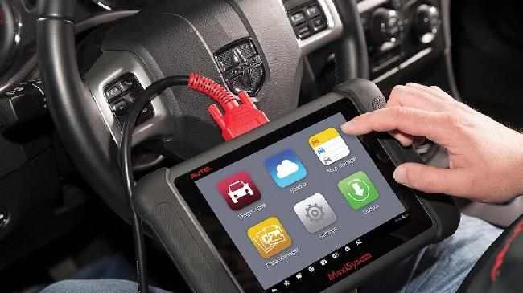

Mantenimiento y reparación con turnos inteligentes
Organizá tus servicios mecánicos con reservas online y tiempos claros. Con NS Motors, tu taller y tus clientes trabajan mejor.
Mecánica General
Diagnóstico, reparación y mantenimiento preventivo.
- Chequeo de sistemas clave
- Mantenimiento según plan del fabricante
- Historial de servicios

Cambio de Aceite
Servicio rápido con insumos de calidad y agenda flexible.
- Aceites y filtros de primeras marcas
- Franjas horarias
- Recordatorios automáticos

Diagnostico con scanner
Diagnóstico electrónico completo con scanner de última generación.
- Diagnóstico de fallas electrónicas
- Chequeo de sensores y actuadores
- Análisis de parámetros en tiempo real
